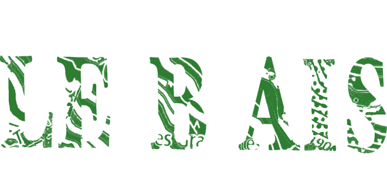
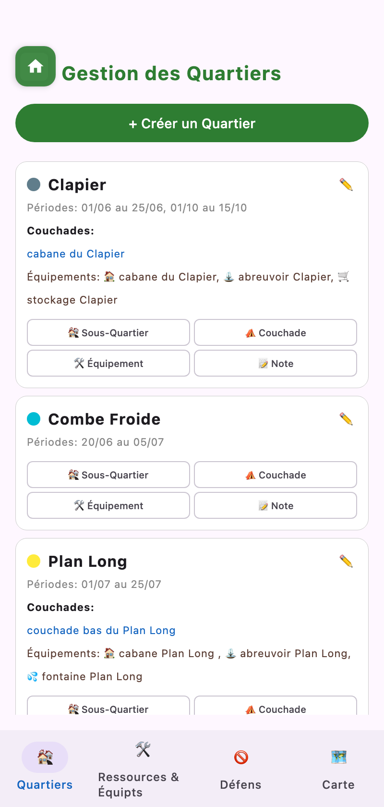
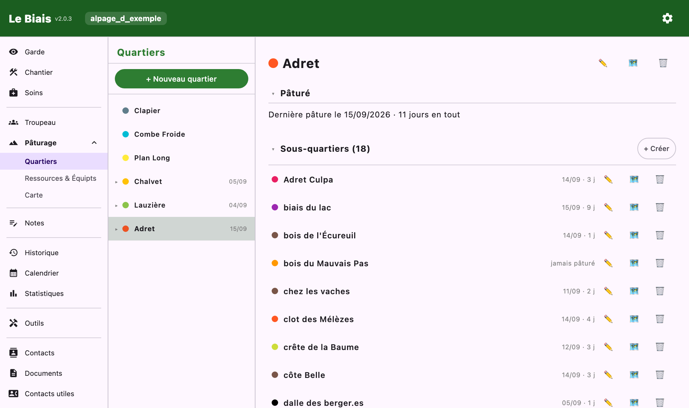
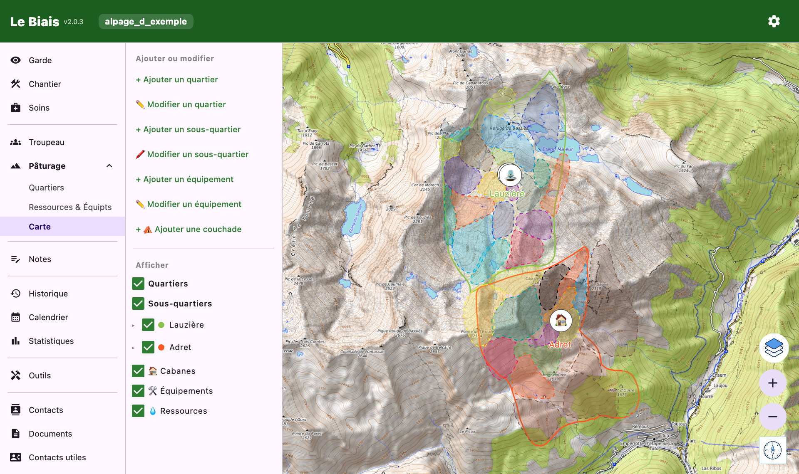

Documentation
Décrire le territoire : ses quartiers, ses équipements, ses points d'eau, les zones à éviter — et le dessiner sur la carte.
Un quartier est un secteur de pâturage ; il peut être découpé en sous-quartiers. Pour chacun :
La fiche d'un quartier affiche aussi ce que les gardes y ont relevé : dernière pâture le…, n jours en tout, ou « jamais pâturé ». C'est le pâturage réalisé, à comparer au pâturage prévu.


Tout ce qu'il faut savoir trouver — et dans quel état :
Chaque catégorie accepte vos propres types, avec l'icône de votre choix. Une fiche d'équipement porte :
La liste se filtre par catégorie, par état et par quartier.
Un défens est une zone où le troupeau ne doit pas aller : une plantation, un captage, une combe où nichent les tétras. Il se trace librement sur la carte, sans tenir compte des limites des quartiers — un même défens peut en chevaucher plusieurs, ou sortir de l'alpage.
Chaque défens porte :
Un document se joint de deux façons : 📂 Joindre un fichier le range aussi dans vos documents, sous l'étiquette Défens ; Choisir un document existant relie un papier déjà classé — le même contrat peut ainsi servir à plusieurs zones.
L'application compare la période à la date du jour, sans que vous ayez rien à cocher :
L'onglet Défens du pâturage les liste, ceux qui sont actifs en tête, et se filtre par motif. Depuis une fiche, Voir sur la carte y mène et Modifier le contour rouvre le tracé.
Un défens ne déclenche aucune alerte quand un parcours de garde le traverse : c'est un repère sur la carte, pas un garde-fou.
La carte affiche les quartiers, sous-quartiers, défens, cabanes, équipements et ressources ; une légende permet de masquer chaque famille. Sur le poste de bureau, elle liste aussi les défens un à un : une case masque une zone, un clic sur son nom cadre la carte dessus. Toucher un défens ouvre sa fiche.

Gestion des calques superpose plusieurs fonds, chacun avec son opacité et son rang : OpenTopoMap, OpenStreetMap, IGN (carte topographique, plan, photographies aériennes, cadastre) et imagerie satellite Esri. Un cadastre à moitié transparent sur une photo aérienne, par exemple.
Quitter un tracé en cours demande confirmation : rien ne se perd par un geste malheureux.
Depuis l'onglet Quartiers des statistiques, Voir sur la carte rejoue la saison : jour après jour, les sous-quartiers pâturés s'allument, puis s'estompent. La vitesse et la durée du fondu se règlent.
Là-haut, pas de réseau : il faut emporter la carte. Dans les paramètres, Cartes hors ligne → Rapatrier avant de monter télécharge les tuiles qui couvrent vos quartiers, et seulement elles. L'écran annonce le nombre de tuiles et le poids avant de commencer.
Tracez d'abord vos quartiers : sans contour, il n'y a pas de zone à emporter. Certains fonds, tenus par des bénévoles, interdisent le téléchargement en masse : ils restent consultables hors ligne là où vous êtes déjà passé, car l'application garde ce qu'elle a affiché.